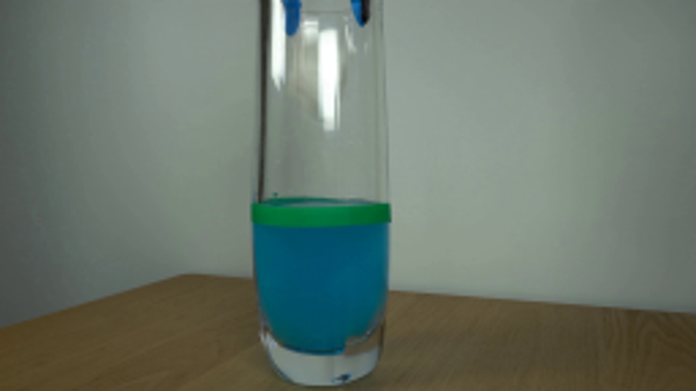
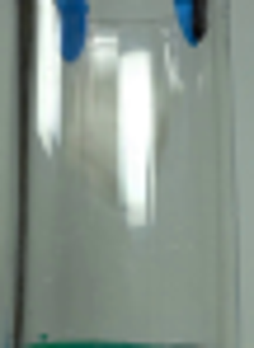
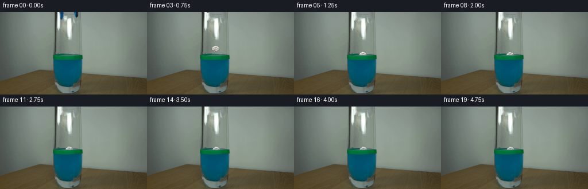
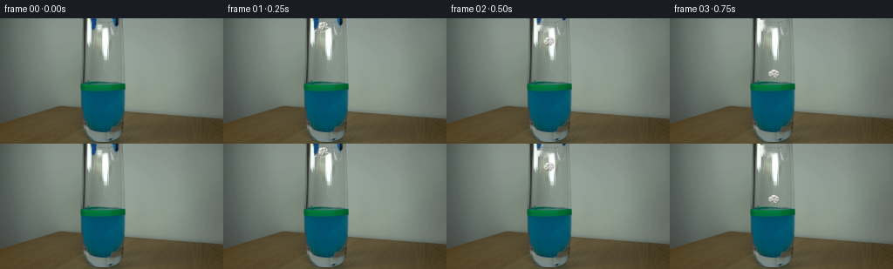
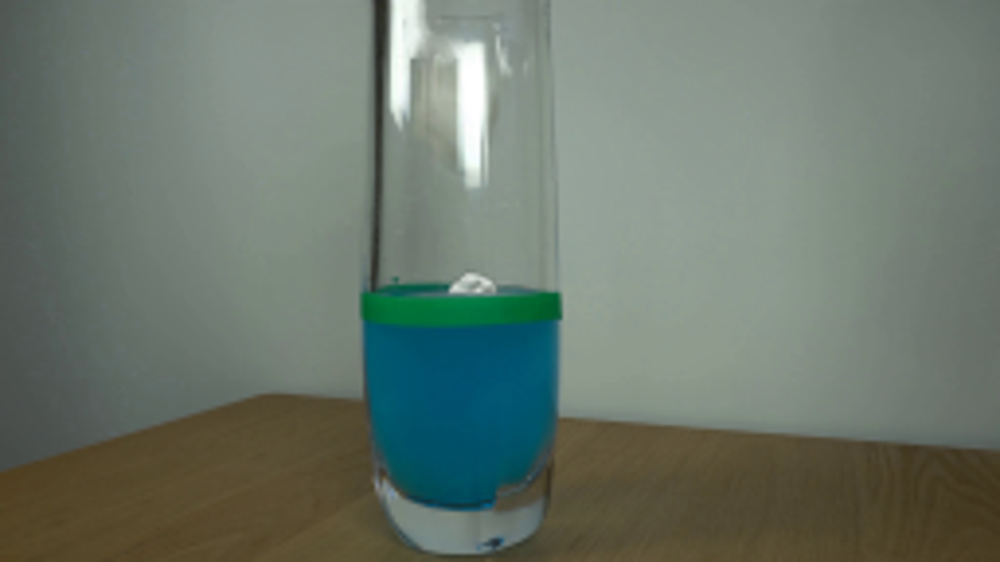

CODING AGENTS AS PIXEL WORLD MODELS
traex/GPT-6.1-Sol · 0138
点击播放 · 原生 RGB 像素
逐轮保存的候选
回放视频、检查图与代码变化。
每份候选均可单独播放。实际图片检查记录在下方工具轨迹中。
候选 01播放与检查图
点击播放 · 原生 RGB 像素

展开代码变化
--- 上一保存版本
+++ 本次保存版本
@@ -0,0 +1,149 @@
+from pathlib import Path
+import numpy as np
+from PIL import Image, ImageDraw, ImageFilter
+import cv2
+from scipy.spatial import Delaunay
+import artifact_io
+
+ROOT = Path(__file__).resolve().parent
+S=4
+W,H=256,144
+original=np.array(Image.open(ROOT/'first_frame.png').convert('RGB'))
+# A clean plate for the two withdrawing gripper tips and the small held paper.
+toolmask=np.zeros((H,W),np.uint8)
+cv2.fillPoly(toolmask,[np.array([(103,0),(111,0),(111,8),(109,14),(105,14),(104,9)])],255)
+cv2.fillPoly(toolmask,[np.array([(128,0),(136,0),(136,8),(133,11),(130,9)])],255)
+papermask=np.zeros_like(toolmask)
+cv2.fillPoly(papermask,[np.array([(111,6),(117,6),(118,9),(118,13),(114,15),(110,12)])],255)
+mask=np.maximum(toolmask,papermask)
+plate=cv2.inpaint(original,mask,4,cv2.INPAINT_TELEA)
+# Separate clean original fragments, with feathered camera-soft contours.
+left=np.zeros_like(toolmask); cv2.fillPoly(left,[np.array([(103,0),(111,0),(111,8),(109,14),(105,14),(104,9)])],255)
+right=np.zeros_like(toolmask); cv2.fillPoly(right,[np.array([(128,0),(136,0),(136,8),(133,11),(130,9)])],255)
+
+# Stable irregular triangulation of folds in one small ball of crumpled paper.
+rng=np.random.default_rng(63)
+pts=[[0.0,0.0]]
+for n,r in [(9,.31),(17,.68),(25,1.0)]:
+ for j in range(n):
+ th=2*np.pi*(j+.18*rng.normal())/n
+ rr=r*(1+rng.uniform(-.09,.065))
+ pts.append([rr*np.cos(th),rr*np.sin(th)])
+pts=np.array(pts)
+tris=Delaunay(pts).simplices
+r2=(pts**2).sum(axis=1)
+heights=.62*np.sqrt(np.maximum(0,1-r2)) + rng.normal(0,.19,len(pts))
+heights[r2>.8]*=.65
+verts=np.c_[pts,heights]
+light=np.array([-.45,-.65,1.0]);light/=np.linalg.norm(light)
+colors=[]
+for tri in tris:
+ a,b,c=verts[tri]
+ normal=np.cross(b-a,c-a)
+ if normal[2]<0:normal=-normal
+ normal/=np.linalg.norm(normal)
+ illum=max(0,np.dot(normal,light))
+ v=np.clip(139+99*illum+rng.normal(0,5),120,240)
+ colors.append((v,v+1,v-8))
+colors=np.array(colors)
+
+
+def paper_sprite(angle=0,flatten=1,wet=0):
+ # Subpixel folds, rendered optically soft at the scene's camera resolution.
+ size=80
+ im=Image.new('RGBA',(size,size),(0,0,0,0)); dr=ImageDraw.Draw(im)
+ ca,sa=np.cos(angle),np.sin(angle)
+ rot=np.array([[ca,-sa],[sa,ca]])
+ xy=pts@rot.T
+ xy[:,0]*=6.2*S;xy[:,1]*=5.1*S*flatten
+ xy+=size/2
+ for tri,col in zip(tris,colors):
+ v=np.clip(col*(1-.18*wet)+np.array([-12,4,9])*wet,0,255)
+ dr.polygon([tuple(xy[i]) for i in tri], fill=tuple(v.astype(int))+(255,))
+ # Several shadowed valley seams, fine and partly hidden among facets.
+ for k in (4,12,26,38):
+ tri=tris[k];a,b=xy[tri[:2]]
+ dr.line([tuple(a),tuple(.78*b+.22*a)],fill=(114,121,112,52),width=1)
+ return im.filter(ImageFilter.GaussianBlur(.85))
+
+YY,XX=np.mgrid[0:H,0:W]
+
+
+def floating_ripple(arr,t,cx,cy):
+ # Surface is almost edge-on; expanding elliptical wavelets remain inside glass.
+ if t<.81:return arr
+ age=t-.81
+ amp=np.exp(-age/0.62)
+ if amp<.009:return arr
+ hi=Image.fromarray(arr).resize((W*S,H*S),Image.Resampling.BICUBIC).convert('RGBA')
+ over=Image.new('RGBA',hi.size);d=ImageDraw.Draw(over)
+ for j in range(3):
+ r=4.2+14*age-4.5*j
+ if not 1<r<23:continue
+ depth=.8+.055*r
+ alpha=int(69*amp*(1-j*.19))
+ d.arc([(cx-r)*S,(74.8-depth)*S,(cx+r)*S,(74.8+depth)*S],185,350,fill=(120,171,154,alpha),width=2)
+ d.arc([(cx-r)*S,(74.8-depth)*S,(cx+r)*S,(74.8+depth)*S],15,170,fill=(26,108,110,alpha),width=2)
+ if age<.43:
+ a=int(95*(1-age/.43))
+ # A restrained splash, from the small lightweight object.
+ d.line([(cx-5)*S,74.4*S,(cx-7)*S,72.7*S,(cx-7.2)*S,72*S],fill=(125,168,161,a),width=2)
+ d.line([(cx+5)*S,74.5*S,(cx+7)*S,72.8*S],fill=(131,170,165,a),width=2)
+ # Only open liquid surface. The physical green marker remains fixed.
+ lay=np.array(over.resize((W,H),Image.Resampling.LANCZOS)).astype(float)
+ alpha=lay[:,:,3:4]/255
+ alpha*=((XX>=96)&(XX<=141)&(YY<76))[...,None]
+ return np.uint8(np.clip(arr*(1-alpha)+lay[:,:,:3]*alpha,0,255))
+
+
+def make_frame(i):
+ if i==0:return original.copy()
+ t=i/4
+ arr=plate.astype(float).copy()
+ # The jaws open a little, then lift straight out of the shot.
+ opening=min(1,t/.35)*1.4
+ up=max(0,t-.2)*24
+ for m,dx in [(left,-opening),(right,opening)]:
+ mat=np.float32([[1,0,dx],[0,1,-up]])
+ src=cv2.warpAffine(original.astype(float),mat,(W,H),flags=cv2.INTER_LINEAR)
+ a=cv2.warpAffine(m.astype(float)/255,mat,(W,H),flags=cv2.INTER_LINEAR)
+ arr=arr*(1-a[...,None])+src*a[...,None]
+ # Paper accelerates freely for the short distance from the inner rim.
+ release=.15
+ tau=max(0,t-release)
+ hit=.15+np.sqrt(2*(75.2-7.4)/315)
+ if t<hit:
+ cy=7.4+.5*315*tau*tau
+ cx=114.2+5.5*min(1,tau/(hit-release))
+ angle=-.28+1.55*tau
+ flatten=1;wet=0
+ else:
+ age=t-hit
+ cy=75.15+2.4*np.exp(-age/0.43)*np.sin(12*age)
+ cx=119.7+1.5*(1-np.exp(-age/2.7))+.25*np.sin(2.0*age)*np.exp(-age/2)
+ angle=.55+.11*np.sin(age*3)*np.exp(-age/1.2)
+ flatten=1-.12*np.exp(-age/.32)
+ wet=.52*(1-np.exp(-age/2.2))
+ arr=floating_ripple(np.uint8(np.clip(arr,0,255)),t,cx,cy).astype(float)
+ spr=paper_sprite(angle,flatten,wet)
+ lay=Image.new('RGBA',(W*S,H*S));lay.alpha_composite(spr,(round(cx*S-spr.width/2),round(cy*S-spr.height/2)))
+ layer=np.array(lay.resize((W,H),Image.Resampling.LANCZOS)).astype(float)
+ a=layer[:,:,3:4]/255
+ color=layer[:,:,:3]
+ # View the ball through the stationary glass, including the strong front reflection.
+ reflect=np.clip((original.mean(axis=2)-173)/85,0,.8)
+ reflect*=((XX>=117)&(XX<=126)&(YY<61))
+ color=color*(1-.37*reflect[...,None])+original*(.37*reflect[...,None])
+ if t>=hit:
+ # The wrap-around opaque green line occludes the lower edge of the ball.
+ band=((YY>=76)&(YY<=81)&(XX>=94)&(XX<=142)).astype(float)
+ band= np.maximum(band, (((YY==75)&(XX>103)&(XX<135))).astype(float)*.72)
+ a*=1-band[...,None]
+ underwater=YY>=82
+ color[underwater]=.43*color[underwater]+.57*original[underwater]
+ a[underwater]*=.72
+ arr=arr*(1-a)+color*a
+ return np.uint8(np.clip(arr,0,255))
+
+frames=np.stack([make_frame(i) for i in range(20)])
+artifact_io.save(frames,ROOT)
可观测工具轨迹
实际执行的命令与返回图片。
命令 1exit 0
/bin/bash -lc "ls -la && cat prompt.txt && printf '\\n---RULES---\\n' && cat GENERATION_RULES.md"
命令 2exit 0
/bin/bash -lc "cat artifact_io.py && python - <<'PY'
from PIL import Image
im=Image.open('first_frame.png'); print(im.size); im.resize((1024,576)).save('.tmp/first_large.png')
PY"命令 3exit 0
/bin/bash -lc "python - <<'PY'
from PIL import Image
im=Image.open('first_frame.png'); im.crop((92,0,146,74)).resize((432,592)).save('.tmp/crop.png')
PY"命令 4exit 0
/bin/bash -lc "python - <<'PY'
from PIL import Image
im=Image.open('first_frame.png'); im.crop((94,0,144,55)).resize((500,550),Image.Resampling.NEAREST).save('.tmp/crop_near.png')
PY"命令 5exit 0
/bin/bash -lc "python - <<'PY'
import numpy as np
from PIL import Image
im=np.array(Image.open('first_frame.png'))
for y in (0,2,4,6,8,10,12,14,16,20):
print(y,' '.join(f'{x}:{list(im[y,x])}' for x in range(102,140,2)))
PY"命令 6exit 0
/bin/bash -lc "python - <<'PY'
import scipy; import cv2
print('scipy',scipy.__version__,'cv2',cv2.__version__)
PY"命令 7exit 0
/bin/bash -lc "cat > generate.py <<'PY'
from pathlib import Path
import numpy as np
from PIL import Image, ImageDraw, ImageFilter
import cv2
from scipy.spatial import Delaunay
import artifact_io
ROOT = Path(__file__).resolve().parent
S=4
W,H=256,144
original=np.array(Image.open(ROOT/'first_frame.png').convert('RGB'))
# A clean plate for the two withdrawing gripper tips and the small held paper.
toolmask=np.zeros((H,W),np.uint8)
cv2.fillPoly(toolmask,[np.array([(103,0),(111,0),(111,8),(109,14),(105,14),(104,9)])],255)
cv2.fillPoly(toolmask,[np.array([(128,0),(136,0),(136,8),(133,11),(130,9)])],255)
papermask=np.zeros_like(toolmask)
cv2.fillPoly(papermask,[np.array([(111,6),(117,6),(118,9),(118,13),(114,15),(110,12)])],255)
mask=np.maximum(toolmask,papermask)
plate=cv2.inpaint(original,mask,4,cv2.INPAINT_TELEA)
# Separate clean original fragments, with feathered camera-soft contours.
left=np.zeros_like(toolmask); cv2.fillPoly(left,[np.array([(103,0),(111,0),(111,8),(109,14),(105,14),(104,9)])],255)
right=np.zeros_like(toolmask); cv2.fillPoly(right,[np.array([(128,0),(136,0),(136,8),(133,11),(130,9)])],255)
# Stable irregular triangulation of folds in one small ball of crumpled paper.
rng=np.random.default_rng(63)
pts=[[0.0,0.0]]
for n,r in [(9,.31),(17,.68),(25,1.0)]:
for j in range(n):
th=2*np.pi*(j+.18*rng.normal())/n
rr=r*(1+rng.uniform(-.09,.065))
pts.append([rr*np.cos(th),rr*np.sin(th)])
pts=np.array(pts)
tris=Delaunay(pts).simplices
r2=(pts**2).sum(axis=1)
heights=.62*np.sqrt(np.maximum(0,1-r2)) + rng.normal(0,.19,len(pts))
heights[r2>.8]*=.65
verts=np.c_[pts,heights]
light=np.array([-.45,-.65,1.0]);light/=np.linalg.norm(light)
colors=[]
for tri in tris:
a,b,c=verts[tri]
normal=np.cross(b-a,c-a)
if normal[2]<0:normal=-normal
normal/=np.linalg.norm(normal)
illum=max(0,np.dot(normal,light))
v=np.clip(139+99*illum+rng.normal(0,5),120,240)
colors.append((v,v+1,v-8))
colors=np.array(colors)
def paper_sprite(angle=0,flatten=1,wet=0):
# Subpixel folds, rendered optically soft at the scene's camera resolution.
size=80
im=Image.new('RGBA',(size,size),(0,0,0,0)); dr=ImageDraw.Draw(im)
ca,sa=np.cos(angle),np.sin(angle)
rot=np.array([[ca,-sa],[sa,ca]])
xy=pts@rot.T
xy[:,0]*=6.2*S;xy[:,1]*=5.1*S*flatten
xy+=size/2
for tri,col in zip(tris,colors):
v=np.clip(col*(1-.18*wet)+np.array([-12,4,9])*wet,0,255)
dr.polygon([tuple(xy[i]) for i in tri], fill=tuple(v.astype(int))+(255,))
# Several shadowed valley seams, fine and partly hidden among facets.
for k in (4,12,26,38):
tri=tris[k];a,b=xy[tri[:2]]
dr.line([tuple(a),tuple(.78*b+.22*a)],fill=(114,121,112,52),width=1)
return im.filter(ImageFilter.GaussianBlur(.85))
YY,XX=np.mgrid[0:H,0:W]
def floating_ripple(arr,t,cx,cy):
# Surface is almost edge-on; expanding elliptical wavelets remain inside glass.
if t<.81:return arr
age=t-.81
amp=np.exp(-age/0.62)
if amp<.009:return arr
hi=Image.fromarray(arr).resize((W*S,H*S),Image.Resampling.BICUBIC).convert('RGBA')
over=Image.new('RGBA',hi.size);d=ImageDraw.Draw(over)
for j in range(3):
r=4.2+14*age-4.5*j
if not 1<r<23:continue
depth=.8+.055*r
alpha=int(69*amp*(1-j*.19))
d.arc([(cx-r)*S,(74.8-depth)*S,(cx+r)*S,(74.8+depth)*S],185,350,fill=(120,171,154,alpha),width=2)
d.arc([(cx-r)*S,(74.8-depth)*S,(cx+r)*S,(74.8+depth)*S],15,170,fill=(26,108,110,alpha),width=2)
if age<.43:
a=int(95*(1-age/.43))
# A restrained splash, from the small lightweight object.
d.line([(cx-5)*S,74.4*S,(cx-7)*S,72.7*S,(cx-7.2)*S,72*S],fill=(125,168,161,a),width=2)
d.line([(cx+5)*S,74.5*S,(cx+7)*S,72.8*S],fill=(131,170,165,a),width=2)
# Only open liquid surface. The physical green marker remains fixed.
lay=np.array(over.resize((W,H),Image.Resampling.LANCZOS)).astype(float)
alpha=lay[:,:,3:4]/255
alpha*=((XX>=96)&(XX<=141)&(YY<76))[...,None]
return np.uint8(np.clip(arr*(1-alpha)+lay[:,:,:3]*alpha,0,255))
def make_frame(i):
if i==0:return original.copy()
t=i/4
arr=plate.astype(float).copy()
# The jaws open a little, then lift straight out of the shot.
opening=min(1,t/.35)*1.4
up=max(0,t-.2)*24
for m,dx in [(left,-opening),(right,opening)]:
mat=np.float32([[1,0,dx],[0,1,-up]])
src=cv2.warpAffine(original.astype(float),mat,(W,H),flags=cv2.INTER_LINEAR)
a=cv2.warpAffine(m.astype(float)/255,mat,(W,H),flags=cv2.INTER_LINEAR)
arr=arr*(1-a[...,None])+src*a[...,None]
# Paper accelerates freely for the short distance from the inner rim.
release=.15
tau=max(0,t-release)
hit=.15+np.sqrt(2*(75.2-7.4)/315)
if t<hit:
cy=7.4+.5*315*tau*tau
cx=114.2+5.5*min(1,tau/(hit-release))
angle=-.28+1.55*tau
flatten=1;wet=0
else:
age=t-hit
cy=75.15+2.4*np.exp(-age/0.43)*np.sin(12*age)
cx=119.7+1.5*(1-np.exp(-age/2.7))+.25*np.sin(2.0*age)*np.exp(-age/2)
angle=.55+.11*np.sin(age*3)*np.exp(-age/1.2)
flatten=1-.12*np.exp(-age/.32)
wet=.52*(1-np.exp(-age/2.2))
arr=floating_ripple(np.uint8(np.clip(arr,0,255)),t,cx,cy).astype(float)
spr=paper_sprite(angle,flatten,wet)
lay=Image.new('RGBA',(W*S,H*S));lay.alpha_composite(spr,(round(cx*S-spr.width/2),round(cy*S-spr.height/2)))
layer=np.array(lay.resize((W,H),Image.Resampling.LANCZOS)).astype(float)
a=layer[:,:,3:4]/255
color=layer[:,:,:3]
# View the ball through the stationary glass, including the strong front reflection.
reflect=np.clip((original.mean(axis=2)-173)/85,0,.8)
reflect*=((XX>=117)&(XX<=126)&(YY<61))
color=color*(1-.37*reflect[...,None])+original*(.37*reflect[...,None])
if t>=hit:
# The wrap-around opaque green line occludes the lower edge of the ball.
band=((YY>=76)&(YY<=81)&(XX>=94)&(XX<=142)).astype(float)
band= np.maximum(band, (((YY==75)&(XX>103)&(XX<135))).astype(float)*.72)
a*=1-band[...,None]
underwater=YY>=82
color[underwater]=.43*color[underwater]+.57*original[underwater]
a[underwater]*=.72
arr=arr*(1-a)+color*a
return np.uint8(np.clip(arr,0,255))
frames=np.stack([make_frame(i) for i in range(20)])
artifact_io.save(frames,ROOT)
PY
python generate.py"命令 8exit 0
/bin/bash -lc "python - <<'PY'
from PIL import Image
im=Image.open('frames/19.png');im.resize((1024,576)).save('.tmp/final_large.png')
PY"命令 9exit 0
/bin/bash -lc "python - <<'PY'
import numpy as np
from PIL import Image
p=np.load('pixels.npz')['pixels']; im=np.array(Image.open('first_frame.png').convert('RGB'),dtype=np.uint32)
expected=(im[:,:,0]<<16)|(im[:,:,1]<<8)|im[:,:,2]
assert p.shape==(144,256,20)
assert np.array_equal(p[:,:,0],expected)
print('Verified: 20 RGB frames, 256x144, frame 00 pixel-identical.')
PY"视觉工具实际返回图片 1

视觉工具实际返回图片 2

视觉工具实际返回图片 3

视觉工具实际返回图片 4

视觉工具实际返回图片 5

保存候选 1 份；完成命令 9 次；可验证图片返回 5 张。原始 API 响应与完整日志保留在本地。